Autoencoders
Tags: AI autoencoders RBM DBN
Date: 2021-02-23
Type: Cursus topic
Notities
Autoencoders extra
Introductie
Specifieke architectuur van NN. Autoencoder (AE) is type NN getraind om zijn input te reconstrueren. AE gaat een betere versie van de input genereren.
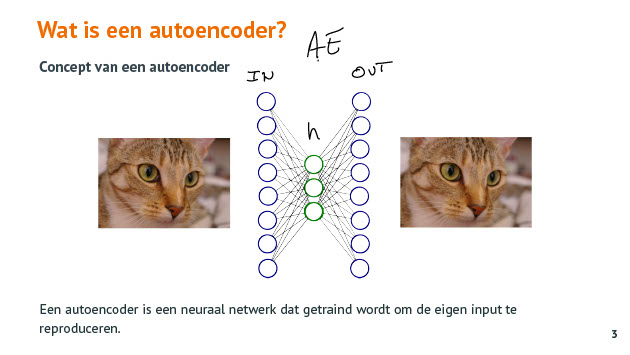
Q: Waarvoor kan je AE gebruiken ?
A:
- compressie toepassen
- waardevolle features uit data te leren en die features gebruiken om recommendaties te doen of om data te reconstrueren
- ruis uit afbeeldingen verwijderen
Kostenfunctie :
Q: Welke kostenfunctie gebruik je bij een AE ?
A: 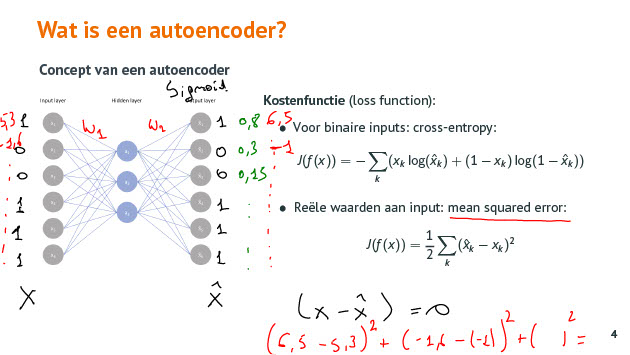
- voor binaire input wordt bepaald met cross-entropy
- voor reeele waarden wordt MSE bepaald
Structuur Autoencoder
Autoencoder slaat op zichzelf.
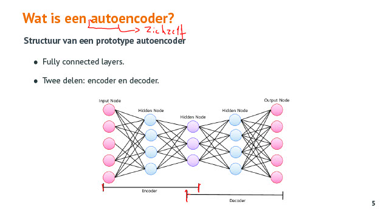
Deep autoencoder
Q: Wat is een Deep AE ?
A: Een AE met meerdere hidden layers
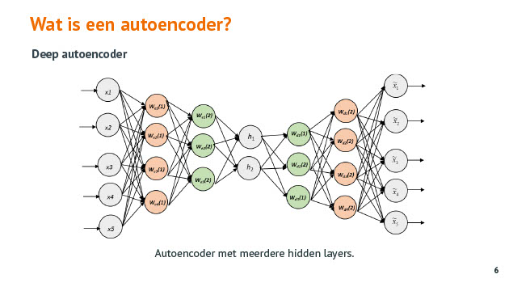
Types autoencoders
Q: Welke types van Auto Encoders ken je en voor welke toepassingen kan je die gebruiken ?
A: 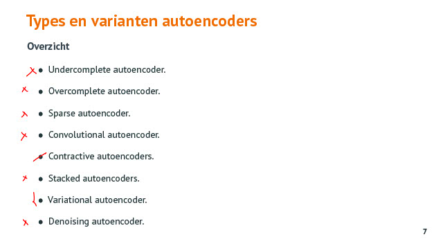
Undercomplete autoencoder
Q: Wat is een undercomplete autoencoder ?
A: 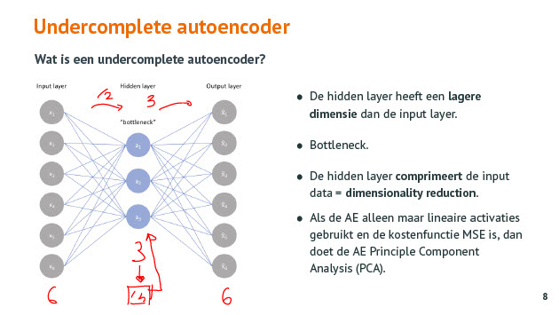
- hiddenlayer lagere dimensie dan inout layer
- bottleneck
- toepassing : compressie
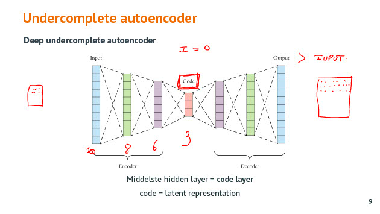
Q: Wat is een Deep undercomplete autoencoder ?
A: Dat is een undercomplete autoencoder met meerdere hidden layers.
- je kan met meerdere lagen werken : middelste hidden layer = code layer
- code (compactste vorm) = latent representation
Q: Hoe groot is de code layer in deze AE ? 
A: 32 Het is de bottleneck van de AE. Dit is een deep undercomplete AE.
Q: Voor welke toepassingen kan je een AE gebruiken waarbij de output layer > input layer ?
A: Dit kan gebruikt worden als je van lage resolutie foto's hogere resolutie foto's wil afleiden.
Python code :
- features and labels zijn hetzelfde want wat binnenkomt moet gereconstrueerd worden aan de output kant.
Q: Kan je een AE gebruiken om algemene foto's, videos te comprimeren ?
A: Je kan een AE training om bepaalde types van foto's te comprimeren (bloemen, auto's, ... ) maar als je een ander type foto (bijv hond) geeft om te comprimeren/decomprimeren dan gaat die dat heel slecht doen. Voorlopig nog niet aan de orde.
Convolutional autoencoder
Q: Hoe kan je een convolutional autoencoder maken ?
A: 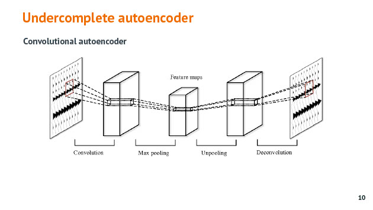
Convolutie gebruiken met evenveel in als output. Maxpooling doen om dimensie reductie te doen. Na de code layer, upscaling/unpooling doen om van minder naar meer output te gaan.
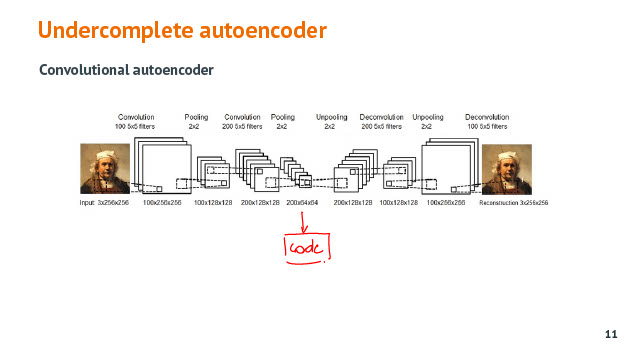
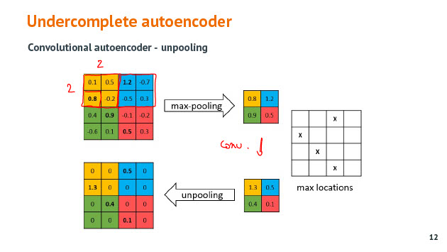
Bijhouden waar maximum zat zodat je bij terugkeer naar meer dimensies weet waar je het maximum moet plaatsen.
Overcomplete autoencoder
Q: Wat is een overcomplete autoencoder ?
A: 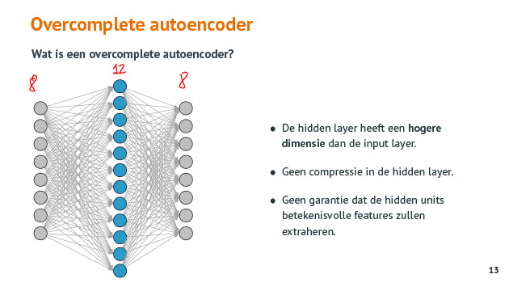
Dimensie van hidden layer groter dan input ! Er is geen compressie in de tussenlaag.
DE AE mag niet zomaar de input layer copieren naar de hidden layer. Om dit te voorkomen worden er voorwaarden aan de AE gesteld. : Sparse AE. Probeer een zo goed mogelijke reconstructie te doen maar probeer dit met zo min mogelijk aantal hidden units. Dit door je door regularisatie = kostfunctie toe te passen.
*Afweging nodig tss goede reoonstructie en sparsity. *
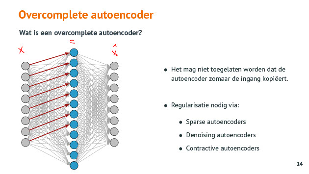
Q: Wat doet de regularisatie parameter Lambda bij AE ?
A: Hiermee kan je de regularisatie sturen. Kleine Lambda : reconstructie is belangrijker, grote Lambda : sparsity is belangrijker, gaat vooral proberen neuronen uit te schakelen. 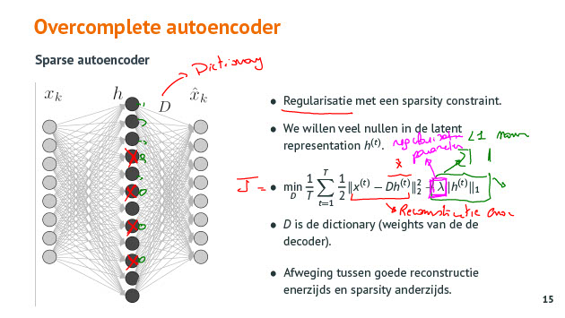
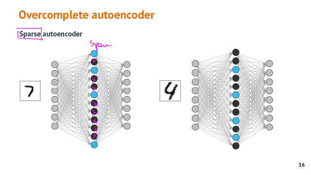
Q: Waarom noemt een sparse AE, sparse ?
A: Sparse wil zeggen dat er veel nullen in je data zit. Hidden layer is sparse omdat het overgtote deel van die activaties op nul staan. Sparsity dwingt de AE om bruikbare features te leren.
Q: Welke evolutie zien we bij de geleerde features van een AE als we meer en meer ruis toevoegen aan de input zijde ?
A: Hoe meer ruis er toegevoegd wordt hoe meer dat de AE gedwongen wordt om meer patronen te zoeken om de informatie te reconstrueren en de ruis uit het signaal te kunnen verwijderen. 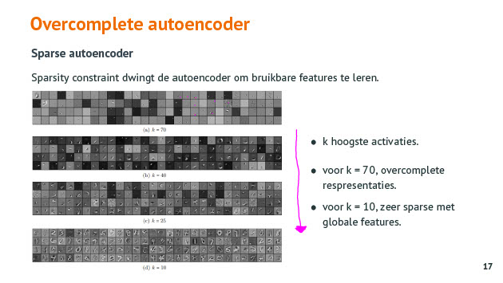
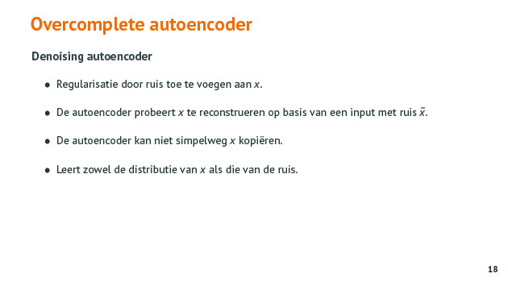
Q: Wat is het nut van een overcomplete AE ?
A: Denoising. Ruis uit je signaal halen. Model wordt getraind om verschil te maken tss image met ruis en de ruis. Hierdoor kan het nadien een image als output geven zonder ruis.
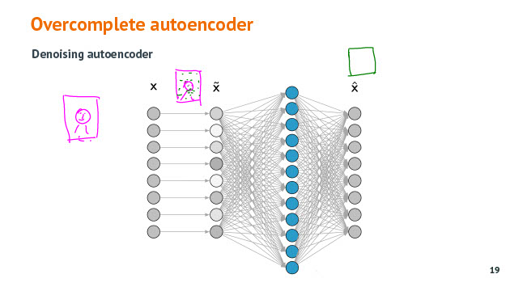
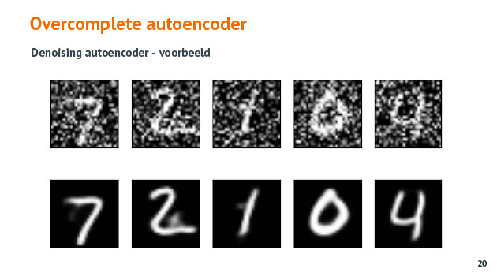
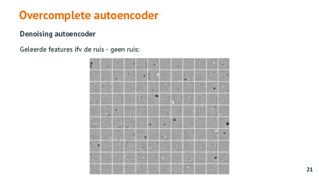
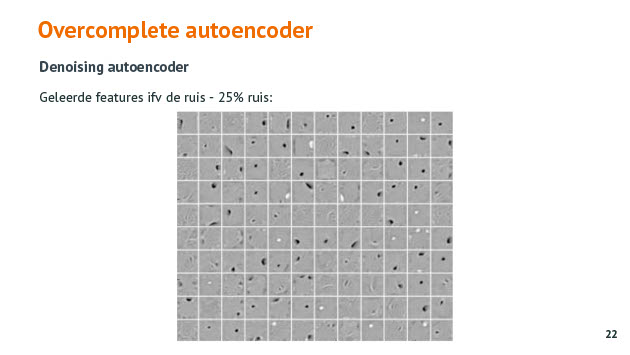
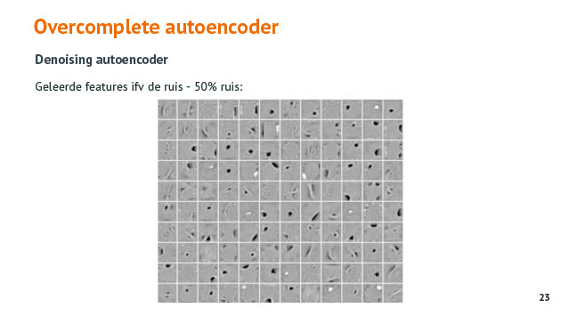
Q: Wat is het verschil tss een undercomplete en overcomplete AE ?
A: Een undercomplete AE zijn hidden layer gaat een kleinere dimensie hebben dan de input. Bij een overcomplete AE heeft de hidden layer een hogere dimensie dan de input layer.
Q: Hoe zou je een AE als classifier kunnen gebruiken ? Wat zijn de beperkingen ?
A: Je kan AE ook als classifier gebruiken. Als je een AE traint om bloemen te reconstrueren en je geeft aan zo'n getrainde AE een bloem foto dan zie je dat die aan de ouput zijde die bloem goed kan reconstrueren wat wil zeggen dat het een bloem is. Obv de reconstructie error kan je nagaan of dat een foto is van een klasse die de AE al gezien heeft of niet. De beperking is wel dat je enkel een binaire classificatie kan doen.
Unsupervised pre-training met stacked autoencoders
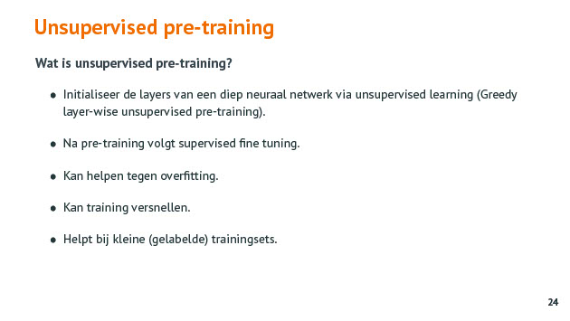
Q: Waarom wordt Unsupervised pre-training met stacked autoencoders voor NN niet meer gebruikt tegenwoordig ?
A: Je komt dit tegenwoordig minder tegen omdat dit een manier was om de training van je NN te versnellen. Maar nu zit je met betere batchoptimization, beter hardware, betere optimizers, ... waardoor deze stap overbodig geworden is.
Het is een manier om een NN een vooranalyse te laten doen. De weights worden zo ingesteld zodat die dichter bij het optimum jkomen, sub-optimum. Hierdoor zullen bij training van het NN de weights minder ver van het optimum liggen en moet er ook minder lang getraind worden, minder epochs en/of minder data nodig. Als je weinig gelabelde data hebt dan kan je de volledige dataset gebruiken in de pretraining en de samples gebruik om het NN zelf te fine tunen.
Q: Wat is de filosofie van unsupervised pre-training met stacked AE ?
A: de eerste AE leert je structuur van je data kennen zonder te weten tot welk category dat die behoort. Het is unsupervised dus de AE krijgt geen labels te zien. De AE moet enkel de input kunnen reconstrueren. Aangezien die AE dit doet met minder neuronen moet die de onderliggende informatie van de data leren/de patronen eruit halen. De tweede AE leert de structuur van de voorgaande AE kennen. Hierdoor worden de weights in de uiteindelijke NN beter geinitialiseerd aangezien de structuur van de data reeds in de weights inzitten en dichter bij het optimum zullen liggen. Het NN zelf moet dan enkel nog getraind worden om te weten welke combinatie van features tot welke klasse behoren.
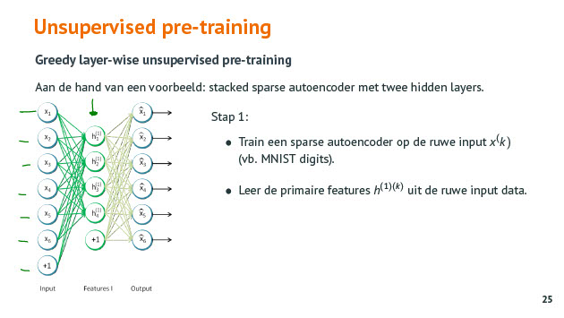
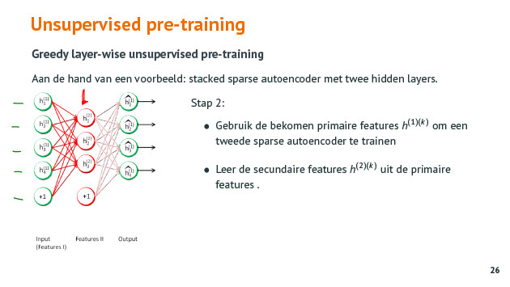
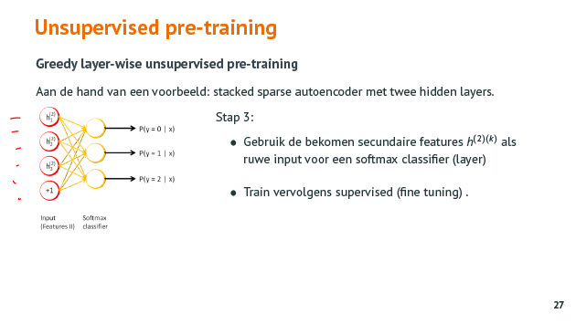
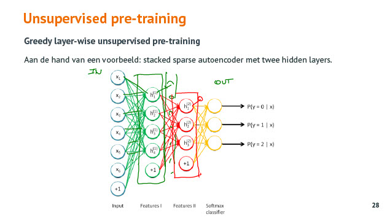
Restricted Boltzmann machines (RBM) en Deep Belief Networks (DBN)
Voor de volledigheid. Tegenwoordig minder en minder populair.
Q: Wat is een Restricted Boltzmann machines (RBM)) ?
A: Een kleiner NN met een input en hidden layer. De input is ook de output. Restricted Boltzman werkt in twee fazen : van input naar hidden layer en tweede faze van hidden layer input reconstrueren.
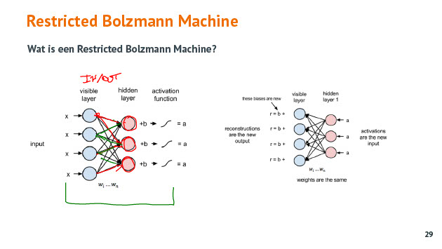
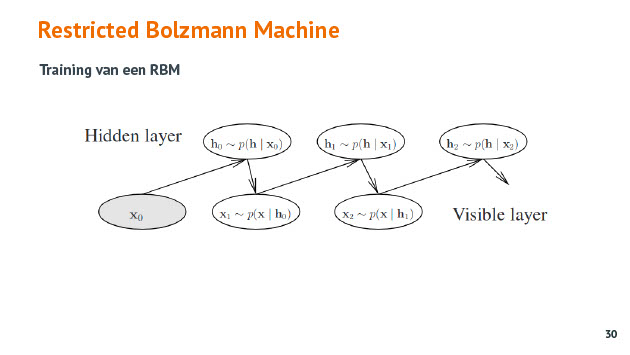
Q: Waarvoor kan je RBM (Restricted Bolzman Machine) gebruiken ?
A: Toepassing : recommendation system
Kan niet getraind worden met gradient descent.
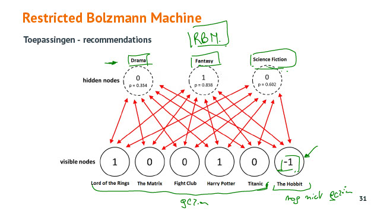
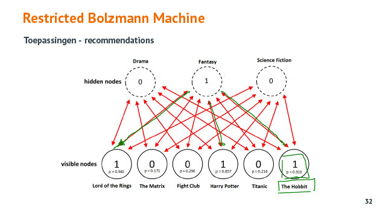
Q: Wat is een DBN (Deep Belief Network) ?
A: dat zijn stacked RBM (Restricted Bolzman Machine)
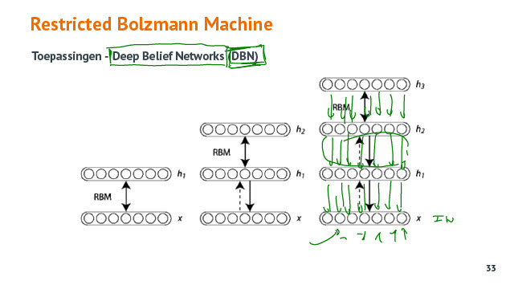